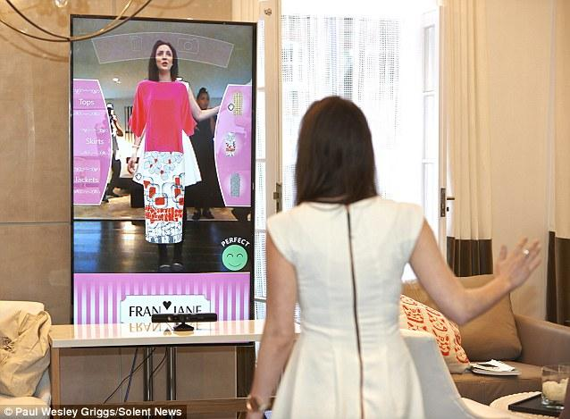

Clothing concept
Analyse bestaande mirrors
Sharp Electronics
Er zijn behoorlijk wat pogingen gedaan voor “virtuele paskamer spiegels”. Er is er ééntje die echt goed gelukt is. Het minpunt aan die spiegel is, dat alleen de kleur veranderd kan worden, niet de kleding zelf. Je kunt dus een jas aan proberen, en vervolgens kijken welke kleur je het best staat. Maar niet kijken welke andere jas misschien mooier zou zijn.
Nu is het zo dat dit bedrijf ook heeft gepoogd om wél verschillende kleding aan te passen met een spiegel. Dat is ze wat minder goed afgegaan. Er is duidelijk een probleem met deze technologie. De motion-tracking en het passen van de kleding op de mensen gaat absoluut niet probleemloos en zorgt voor een hakkelige en ongewenste ervaring die je niet in je huis wilt. Als er een bedrijf is wat dit kan, lijkt het me Sharp Electronics, aangezien ze het kleur-veranderen wel erg goed hebben uitgevoerd. Terwijl beide projecten rond dezelfde tijd lijken te zijn ontwikkeld.
Every woman's dream invention
Met deze spiegel kun je juist wel verschillende kleren proberen. Helaas ziet het er qua graphics en interface niet uit. Het probleem zit hem in de kleding die de persoon werkelijk aan heeft en de kleding die de persoon in de spiegel aan het passen is. Je blijft de kleding zien die de persoon zelf aan heeft. Hierdoor ziet het er al minder goed uit.
Every woman's new best friend hyper realistic new virtual mirror lets try clothes first
“This system takes depth data from the moving Kinect camera, in real time, to create highest quality, geometrically accurate 3D models. Gesture control and skeletal tracking enables an exciting shopping experience.”
Analyse doelgroep
Man
Leeftijd 5-14
Doel: educatief, speels
Tijd: lange tijd voor de spiegel. +/- 45 min
Leeftijd 14-30
Doel: modebewust, bewustzijn eigen lichaam, gezichtshaar/lichaamshaar verzorgen.
Tijd: lange tijd voor de spiegel. +/- 30 min
Leeftijd 30-50
Doel: weinig tijd, maar toch er goed uit zien
Tijd: bijna geen tijd voor de spiegel. +/- 10 min
Leeftijd 50+
Doel: er vertoonbaar uitzien
Tijd: korte tijd voor de spiegel. +/- 5 min
Vrouw
Leeftijd 5-12
Doel: educatief, speels.
Tijd: lange tijd voor de spiegel. +/- 45 min
Leeftijd 13-18
Doel: modebewust, bewustzijn eigen lichaam
Tijd: lange tijd voor de spiegel. +/- 30 min
Leeftijd 18 - 26
Doel: willen er goed uitzien, maar besteden hier toch minder aandacht aan.
Tijd: kortere tijd voor de spiegel. +/- 20 min Alleen bij gelegenheid staan ze lang voor de
spiegel. +/- 50 min
Leeftijd 26-50
Doel: weinig tijd, maar toch er goed uit zien
Tijd: bijna geen tijd voor de spiegel. +/- 10 min Alleen bij gelegenheid staan ze lang voor de
spiegel. +/- 50 min
Leeftijd 50+
Doel: er goed uitzien, ondanks de leeftijd. (goed voor de dag komen?)
Tijd: gemiddeld tot lange tijd voor de spiegel. +/- 25 min
Analyse handelingen
Man
Kleden, gezicht bekijken, lichaam bekijken, selfies maken, haar goed doen, kleding bekijken, stropdas strikken.
De spiegel is het domein van de manVrouw
Kleden, lichaam bekijken, gezicht bekijken, selfies maken, kleding bekijken, haren bijwerken
Vrouwen en hun zelfbeeld
Minder dan de helft van de Nederlandse vrouwen geeft aan tevreden te zijn met haar
spiegelbeeld. Wanneer vrouwen in de spiegel kijken, hebben ze de neiging om afkeurend naar
zichzelf te kijken. Vaak komt die ontevredenheid voort uit een negatief zelfbeeld en is het een
weerspiegeling van hun emoties, die diep geworteld zijn in de angst voor hoe ze er uitzien.
Meer dan een derde van volwassen vrouwen wordt, naarmate zij ouder wordt, kritischer ten
aanzien van haar spiegelbeeld. Slechts 20% van de Nederlandse vrouwen lacht naar zichzelf in
de spiegel.
Vrouwen en kleding
Ondanks hun laag zelfbeeld staan vrouwen toch lang voor de spiegel wanneer ze er goed uit
moeten zien. 30 verschillende outfits uit proberen, omdat deze het toch net niet is, maar
uiteindelijk kom je toch weer bij je eerste outfit terecht.
Concepting brainstorm
Connect
Wat kun je doen als je de spiegel verbind met de spiegels van anderen?
- Wat hebben vrienden/vriendinnen aan? Ben je niet overdressed (of underdressed)?
- Matcht je kleding (qua kleur) wel met je partner?
- Wat vinden anderen van jouw kleding? Wat moet er uit je kledingkast en wat moet je vaker aan? Welke combinaties kun je maken die je normaal niet maakt?
- Heb je niet hetzelfde aan als anderen in je omgeving?
- Online stylisten?
- Welke kleding is nu aanwezig in de kast en welke kleding is in de was? (koppelen met wasmachine?).
- Morgen is het koud en er liggen geen truien meer, alarm dat je voor morgen nog moet wassen.
- Het aanpassen van kleur van een kledingstuk kan heel goed gedaan worden (als te zien hierboven in de video van Sharp Electronics). We kunnen mensen hun eigen kleding laten ontwerpen en direct kijken hoe dit staat. Kleur kan veranderd worden en misschien zelfs patronen of opdrukken.
- Welke kleding past goed bij elkaar? (kleurenpalet?)
- Welke kleding heb je nooit aan of nooit gecombineerd maar zou wel goed staan?
- Twee dagen hetzelfde aan? Of altijd dezelfde kleding op dezelfde dag? Dat kan eeeecht niet! Waarschuwing! Eigenlijk een hulp om wat ‘gevarieerder’ met je assortiment om te gaan dus.
- Heb je haast en moet je binnen 10 minuten de bus halen of in de auto naar je werk gaan? Dan kun je dit aangeven bij de interactive mirror. Dan kiest deze snel een outfit voor je uit en laat de rest voor wat het is. Een overzicht van belangrijke afspraken kan wel nog vertoond worden, met het aantal minuten wat je nog hebt.
- Heb je juist wel veel tijd en wil je meer aandacht besteden aan je kleding en uiterlijk? Dan zal de spiegel uitgebreidere activiteiten vertonen.
- Je zou misschien als extra ook nog de spiegel al kunnen voorprogrammeren zodat je in de ochtend het korte programma krijgt en overdag het langere programma. Ook handig voor wanneer je kinderen hebt met een strakke planning.